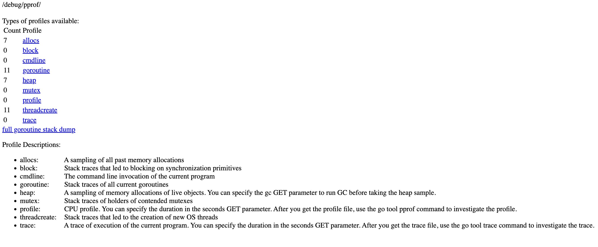
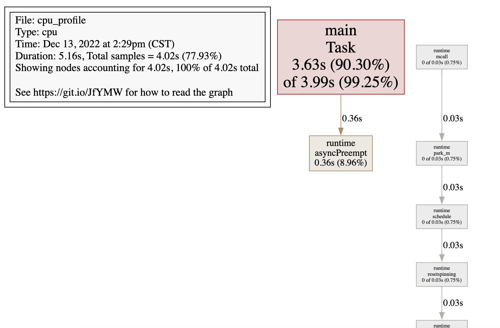
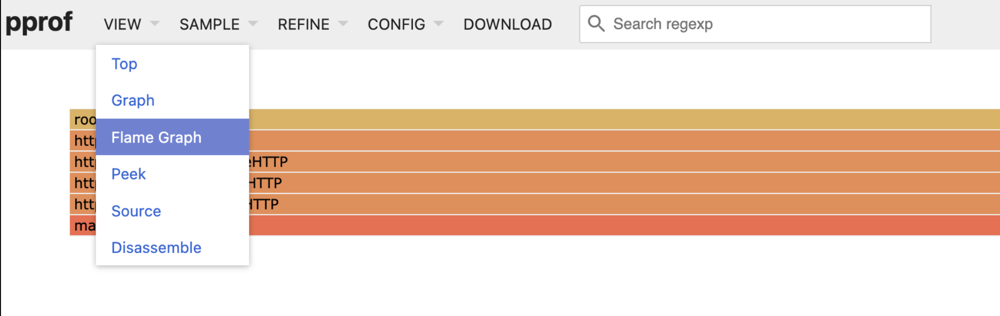

Go 服务性能分析 pprof 的使用
go 是主打性能的语言 所以官方集成了方便性能检测的工具 go tool pprof 方便好用，主要可以收集如下指标
profile: 程序 cpu 使用情况，按照一定频率去采集应用程序在 CPU 和寄存器上面的数据heap: 程序 heap 内存使用情况，和调用关系goroutine: 程序内 goroutine 启动数，各自的调用情况。block: 报告导致阻塞的同步原语的情况 goroutines 不在运行状态的情况，可以用来分析和查找死锁等性能瓶颈。默认情况下未启用，需要手动调用runtime.SetBlockProfileRate启用。mutex: 报告锁竞争。默认情况下未启用，需要手动调用runtime.SetMutexProfileFraction启用。
集成到服务
服务应用
常驻的服务型应用要使用 pprof 首先得在服务启动入口导入包
import _ "net/http/pprof"
···
go func() {
log.Println(http.ListenAndServe("localhost:6060", nil))
}()
然后浏览器访问http://localhost:6060/debug/pprof/，显示如下页面

如上如果服务是 http 服务且使用的是 http.DefaultServeMux 不需要做任何路由注册默认会注册相关路由，初始化调用了init 函数会自动注册，路径为 /debug/pprof/，显示上图，能大概看个当前 goroutine 数目、堆分配情况、锁的情况，具体分析还是要使用下文的 go tool pprof 工具。
如果使用的是自定义的 ServeMux 或 Handler 需要我们自己手动注册需要的路由，比如使用 echo 框架的时候
func RegisterRoutes(engine *echo.Echo) {
router := engine.Group("")
......
// 按需注册
router.GET("/debug/pprof", echo.WrapHandler(http.HandlerFunc(pprof.Index)))
router.GET("/debug/pprof/allocs", echo.WrapHandler(http.HandlerFunc(pprof.Index)))
router.GET("/debug/pprof/block", echo.WrapHandler(http.HandlerFunc(pprof.Index)))
router.GET("/debug/pprof/goroutine", echo.WrapHandler(http.HandlerFunc(pprof.Index)))
router.GET("/debug/pprof/heap", echo.WrapHandler(http.HandlerFunc(pprof.Index)))
router.GET("/debug/pprof/mutex", echo.WrapHandler(http.HandlerFunc(pprof.Index)))
router.GET("/debug/pprof/cmdline", echo.WrapHandler(http.HandlerFunc(pprof.Cmdline)))
router.GET("/debug/pprof/profile", echo.WrapHandler(http.HandlerFunc(pprof.Profile)))
router.GET("/debug/pprof/symbol", echo.WrapHandler(http.HandlerFunc(pprof.Symbol)))
router.POST("/debug/pprof/symbol", echo.WrapHandler(http.HandlerFunc(pprof.Symbol)))
router.GET("/debug/pprof/trace", echo.WrapHandler(http.HandlerFunc(pprof.Trace)))
router.GET("/debug/pprof/threadcreate", echo.WrapHandler(http.HandlerFunc(pprof.Index)))
}
如果使用的是 gin 框架，可以使用官方提供的 middleware
独立应用
独立应用（执行完就退出）使用 pprof ，如工具类应用需要用到 runtime/pprof 包，手动设置 cpu profile 直接放在 main 函数就行，为了更小的影响性能 pprof 会大概以 100 次/秒的频率采样，程序退出最后保存到设置的文件
var cpuprofile = flag.String("cpuprofile", "", "write cpu profile to file")
func main() {
flag.Parse()
if *cpuprofile != "" {
f, err := os.Create(*cpuprofile)
if err != nil {
log.Fatal(err)
}
pprof.StartCPUProfile(f)
defer pprof.StopCPUProfile() // cpu 需要调用 StopCPUProfile
}
...
内存分析需要在调用的函数后调用 WriteHeapProfile 方法就可以，不需要 stop，如官方教程在 FindHavlakLoops 后设置了 WriteHeapProfile
var memprofile = flag.String("memprofile", "", "write memory profile to this file")
...
FindHavlakLoops(cfgraph, lsgraph)
if *memprofile != "" {
f, err := os.Create(*memprofile)
if err != nil {
log.Fatal(err)
}
pprof.WriteHeapProfile(f)
f.Close()
return
}
分析
不管是开启了 http 服务分析，还是手动设置的，都需要使用如下命令分析
go tool pprof [options] [binary] <source> ...
binary 为 build 后的二进制文件，source 为上面生成的报告，也可以是 http 地址， 如果带 -http= 参数会以 web UI 方式展示
# cpu profile
go tool pprof ./main profile.out
# cpu profile use http
go tool pprof ./main http://loacalhost:6060/debug/pprof/profile
# memory
go tool pprof ./main http://loacalhost:6060/debug/pprof/heap
# goroutine
go tool pprof ./main http://loacalhost:6060/debug/pprof/goroutine
# cpu 采样 60s 默认 30s
go tool pprof ./main 'http://loacalhost:6060/debug/pprof/profile?seconds=60'
# web UI 方式查看
go tool pprof -http=:8080 ./main profile.out
单体应用
以cpu_profile.go代码为例，启动参数开启 cpu profile
go build ./cpu_profile.go
./cpu_profile -cpuprofile cpu_profile.out
go tool pprof ./cpu_profile cpu_profile.out
然后启动文本模式的命令行
File: cpu_profile
Type: cpu
Time: Dec 13, 2022 at 2:29pm (CST)
Duration: 5.16s, Total samples = 4.02s (77.93%)
Entering interactive mode (type "help" for commands, "o" for options)
(pprof)
显示 Type: cpu 表示是 cpu profile，采样时间是 5.16s，输入 help 可以查看所有的命令，命令有很多一般常用的有 top, list, peek, tree,web
(pprof) top
Showing nodes accounting for 4.02s, 100% of 4.02s total
Showing top 10 nodes out of 11
flat flat% sum% cum cum%
3.63s 90.30% 90.30% 3.99s 99.25% main.Task
0.36s 8.96% 99.25% 0.36s 8.96% runtime.asyncPreempt
0.03s 0.75% 100% 0.03s 0.75% runtime.pthread_cond_signal
0 0% 100% 0.03s 0.75% runtime.mcall
0 0% 100% 0.03s 0.75% runtime.notewakeup
0 0% 100% 0.03s 0.75% runtime.park_m
0 0% 100% 0.03s 0.75% runtime.resetspinning
0 0% 100% 0.03s 0.75% runtime.schedule
0 0% 100% 0.03s 0.75% runtime.semawakeup
0 0% 100% 0.03s 0.75% runtime.startm
(pprof)
使用 top 命令查看占用前 10 占用 cpu 的采样，可以使用 top 30 增加输出数目，前三列显示了函数正在运行的占用 cpu 的时间，所占用的百分比，第三列是当前所有函数总的使用 cpu 的比例。第四列和第五列代表这个函数以及子函数运行所占用的时间和比例（也被称为累加值 cumulative），应该大于等于前两列的值，可以用 top -cum 按 cumulative 排序，可以明显的看到 main.Task 占用了 90.30% 占用 cpu 异常高
(pprof) list Task
Total: 4.02s
ROUTINE ======================== main.Task in
... cpu_profile.go
3.63s 3.99s (flat, cum) 99.25% of Total
. . 9:)
. . 10:
. . 11:var cpuprofile = flag.String("cpuprofile", "", "write cpu profile to file")
. . 12:
. . 13:func Task() {
3.63s 3.99s 14: for {
. . 15: }
. . 16:}
. . 17:
. . 18:func main() {
. . 19: flag.Parse()
(pprof) peek Task
Showing nodes accounting for 4.02s, 100% of 4.02s total
----------------------------------------------------------+-------------
flat flat% sum% cum cum% calls calls% + context
----------------------------------------------------------+-------------
3.63s 90.30% 90.30% 3.99s 99.25% | main.Task
0.36s 9.02% | runtime.asyncPreempt
----------------------------------------------------------+-------------
(pprof)
list 后跟正则表达式显示源码，peek 显示调用链
(pprof) web
web 命令显示 svg 图，能更直观的展示，前提是需要安装 graphviz，权重越大方框越大，颜色越明显，箭头是调用图

服务型应用
我们来看下如果使用的是 http 服务，以 server.go 为例，服务启动后监听在:6060端口
❯ go build ./server.go
❯ ./server # 启动
访问 http://127.0.0.1:6060/debug/pprof/ 显示 profile 信息，如上图。多次调用/enlarge 路由后进入内存分析
❯ curl http://127.0.0.1:6060/enlarge
slice len: 10485760
❯ curl http://127.0.0.1:6060/enlarge
slice len: 20971520
❯ curl http://127.0.0.1:6060/enlarge
slice len: 31457280
❯ curl http://127.0.0.1:6060/enlarge
slice len: 41943040
❯ go tool pprof 'http://127.0.0.1:6060/debug/pprof/heap'
Fetching profile over HTTP from http://127.0.0.1:6060/debug/pprof/heap
Saved profile in ~/pprof/pprof.alloc_objects.alloc_space.inuse_objects.inuse_space.001.pb.gz
Type: inuse_space
Time: Dec 13, 2022 at 3:32pm (CST)
Entering interactive mode (type "help" for commands, "o" for options)
(pprof) top
Showing nodes accounting for 57.95MB, 100% of 57.95MB total
Showing top 10 nodes out of 28
flat flat% sum% cum cum%
54.95MB 94.82% 94.82% 54.95MB 94.82% main.main.func1
1.50MB 2.59% 97.41% 1.50MB 2.59% runtime.allocm
0.50MB 0.86% 98.27% 0.50MB 0.86% runtime.acquireSudog
0.50MB 0.86% 99.14% 0.50MB 0.86% runtime.bgscavenge
0.50MB 0.86% 100% 1MB 1.73% runtime.gcBgMarkWorker
0 0% 100% 54.95MB 94.82% net/http.(*ServeMux).ServeHTTP
0 0% 100% 54.95MB 94.82% net/http.(*conn).serve
0 0% 100% 54.95MB 94.82% net/http.HandlerFunc.ServeHTTP
0 0% 100% 54.95MB 94.82% net/http.serverHandler.ServeHTTP
0 0% 100% 0.50MB 0.86% runtime.gcMarkDone
(pprof) list func1
Total: 57.95MB
ROUTINE ======================== main.main.func1 in
~/pprof/demo/server.go
54.95MB 54.95MB (flat, cum) 94.82% of Total
. . 11:
. . 12:func main() {
. . 13:
. . 14: http.HandleFunc("/enlarge", func(w http.ResponseWriter, r *http.Request) {
. . 15: d := make([]byte, 10*1024*1024) // 10M
54.95MB 54.95MB 16: data = append(data, d...)
. . 17: fmt.Fprintf(w, "slice len: %d", len(data))
. . 18: })
. . 19:
. . 20: log.Println(http.ListenAndServe("localhost:6060", nil))
. . 21:}
(pprof) tree func1
Active filters:
focus=func1
Showing nodes accounting for 54.95MB, 93.21% of 58.96MB total
----------------------------------------------------------+-------------
flat flat% sum% cum cum% calls calls% + context
----------------------------------------------------------+-------------
54.95MB 100% | net/http.HandlerFunc.ServeHTTP
54.95MB 93.21% 93.21% 54.95MB 93.21% | main.main.func1
----------------------------------------------------------+-------------
54.95MB 100% | net/http.serverHandler.ServeHTTP
0 0% 93.21% 54.95MB 93.21% | net/http.(*ServeMux).ServeHTTP
54.95MB 100% | net/http.HandlerFunc.ServeHTTP
----------------------------------------------------------+-------------
0 0% 93.21% 54.95MB 93.21% | net/http.(*conn).serve
54.95MB 100% | net/http.serverHandler.ServeHTTP
----------------------------------------------------------+-------------
54.95MB 100% | net/http.(*ServeMux).ServeHTTP
0 0% 93.21% 54.95MB 93.21% | net/http.HandlerFunc.ServeHTTP
54.95MB 100% | main.main.func1
----------------------------------------------------------+-------------
54.95MB 100% | net/http.(*conn).serve
0 0% 93.21% 54.95MB 93.21% | net/http.serverHandler.ServeHTTP
54.95MB 100% | net/http.(*ServeMux).ServeHTTP
----------------------------------------------------------+-------------
(pprof)
命令和之前 cpu profile 分析一样只是这次对象是内存，Type: inuse_space 是默认的统计的是内存使用大小，在 go tool pprof执行时加上 -inuse_objects 可以切换，还有几个参数如下
-inuse_space: 正在使用的内存大小，默认模式-inuse_objects: 正在使用，尚未被释放的对象数量-alloc_space: 已经被分配的内存空间，没有考虑对象释放的情况-alloc_objects: 已经被分配的对象数量，没有考虑对象释放的情况
如果是内存泄露, 可以根据 inuse_space 的占比和变化判断, 但是也不是万能的, 有些时候, 一些 inuse_space 是因为高流量导致的. 对于频繁创建的一些对象 可以在 alloc_space 和 alloc_object 判断, 这种场景可以通过复用对象池来减少没意义的分配。
上面 main.main.func1 明显就是内存很高，很容易排查到，tree命令显示了函数调用栈
在调用 cpu profile 时默认采样 30s，可以使用 ?seconds=5s参数指定，如果在调用时返回一个 "profile duration exceeds server's *WriteTimeout*"的错误。那是 http.Server 的 WriteTimeout 小了调大相应的值即可
http.Server{
Addr: addr,
ReadTimeout: time.Second * 5,
ReadHeaderTimeout: time.Second * 2,
WriteTimeout: time.Second * 90,
}
加上 -http=:8080 可以使用 web ui 的方式查看，不启动命令行
go tool pprof -http=:8080 'http://127.0.0.1:6060/debug/pprof/heap'
Fetching profile over HTTP from http://127.0.0.1:6060/debug/pprof/heap
Saved profile in ~/pprof/pprof.alloc_objects.alloc_space.inuse_objects.inuse_space.002.pb.gz
Serving web UI on http://localhost:8080
访问网页，在左上角 view 中切换 Flame Graph 可以以火焰图的方式展示

如果应用比较复杂，生成的调用图特别大，看起来很乱，有两个办法可以优化：
- 使用
web funcName的方式，只打印和某个函数相关的内容 - 运行
go tool pprof命令时加上--nodefration=0.05参数，表示如果调用的子函数使用的 CPU、memory 不超过 5%，就忽略
测试集成
go test 命令有两个参数和 pprof 相关，它们分别指定生成的 CPU 和 Memory profiling 保存的文件：
- -cpuprofile：cpu profiling 数据要保存的文件地址
- -memprofile：memory profiling 数据要报文的文件地址
比如下面执行 go test 的同时，也会执行 CPU profiling，并把结果保存在 cpu.prof 文件中：
$ go test -bench . -cpuprofile=cpu.prof
执行结束之后，就会生成 main.test 和 cpu.prof 文件。要想使用 go tool pprof，需要指定的二进制文件就是 main.test。
在 https 中使用
go tool pprof https+insecure://localhost:6060/debug/pprof/heap将原来的http替换成https+insecure即可。
自动捕获
profile 是查看当时的系统状态 我们线上代码运行出问题的时候有时候要么已经重启要么程序已经退出，怎么保留案发现场及时的记录有用的数据呢，手动调用runtime/pprof是可以控制，但自己打哪里不知道啊，所以介绍下下面一个包
它能在两种状态下记录 profile
- cpu/mem/goroutine 数突然比正常情况下的平均值高出了一定的比例，比如说资源占用率突增 25%就是出现了资源尖刺。
- cpu/mem/goroutine 数超过了程序正常运行情况下的阈值，比如说 80%就定义为服务资源紧张。
具体可参考文档自行配置